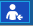

Home Overview
This link provides users with a quick view of items pertinent to the logged in user.

It consists of four sections:
- A toolbar with buttons for various tasks, and information about the current database connection.
- Set User Preferences

Tool to merge two patients' information Connect to online Help
Connect to online Help - Connect to TIMS Support
 Display information about TIMS for Audiology, including version number and NOAH license information
Display information about TIMS for Audiology, including version number and NOAH license information Displays the server, database, user and site that you are currently logged on to.
Displays the server, database, user and site that you are currently logged on to. Refresh current schedule view
Refresh current schedule view- An Appointment grid that displays only the appointments and schedule items assigned to the logged in user. The display will be for the current date only. Appointments can not be added or edited here, only viewed.

- A list of User Tasks that are action items assigned to the user, along with a due date.
- The tasks will appear in the Task List until they are deleted.
- Add as task, refresh list, or add a new appointment
- View tasks "Assigned to me" or "Assigned by Me"
- View tasks associated with a patient or not associated with a patient
- Click on a column header name to sort by that column - either ascending or descending order
- Show or hide completed tasks
- See User Tasks for details

- A list of Favorite Reports that the user runs frequently.
- Reports are designated as favorites in the Analytics/Reporting link by right-clicking and choosing "Add to Favorites"

- Run the report from the Home link by double-clicking on the report name
- Remove a report from Favorites by right-clicking and choosing "Remove from Favorites"